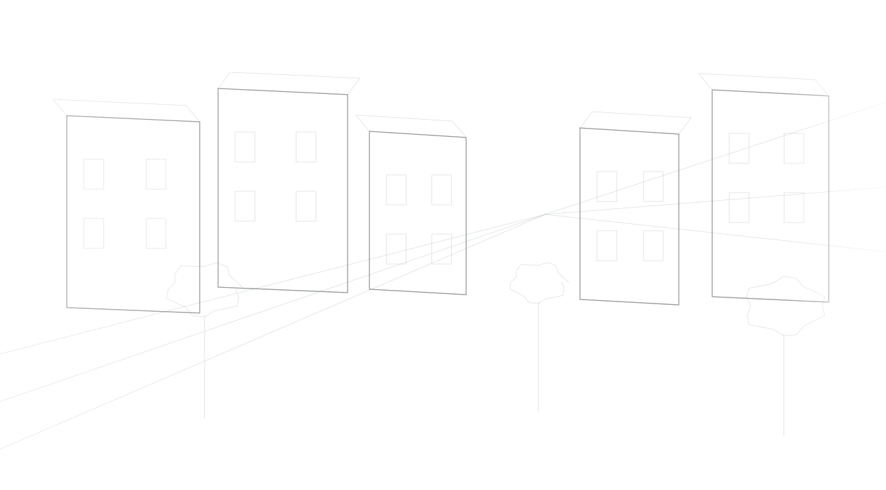

CITIES ARE
NEVER FINISHED.
An enduring curiosity about how places grow — and the decisions that shape what they become.
THE FUTURE OF A PLACE BEGINS LONG BEFORE CONSTRUCTION.
Cities are living, evolving environments. They grow through the ambitions of individuals, the changing needs of communities and the development of industries.
Every building, street and neighbourhood begins with an idea, an opportunity and a series of decisions about what a place could become. The thinking that turns possibility into reality is what makes planning meaningful.
CURIOUS ABOUT
WHAT COULD BE.
It was this relationship between possibility and reality that drew me to urban planning.
I completed a Bachelor of Urban Planning (Honours) at the University of Auckland, developing a deeper appreciation for the connections between people, land, infrastructure, industry and the built environment.
What interests me is the thought behind development: why cities grow the way they do, how challenges are navigated and how an initial idea can become something meaningful.
Behind every development is something more than land and construction. There is an ambition to create something that did not exist before.

UNDERSTAND THE
POSSIBILITIES.
I founded KOVA Planning Co. to bring that curiosity and considered perspective into the planning and development process.
Every site sits between opportunity and constraint. Its potential can only be understood by considering the planning framework, environment, infrastructure, practical construction questions and the people a project may affect.
KOVA helps clients understand what a site can support, what approvals are needed and what to check before committing. We lead the planning work and bring in independent designers, surveyors and engineers when needed, giving clients one point of contact for the application package.
Because good planning is more than permission. It is asking better questions before shaping what comes next.